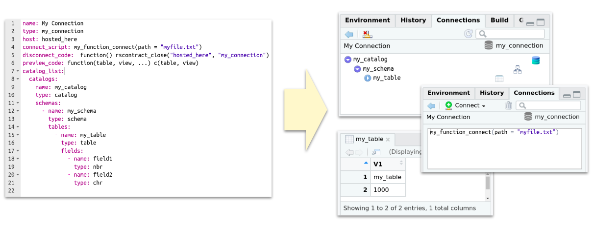
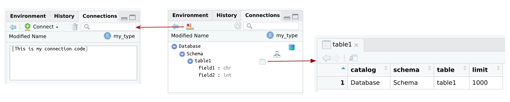
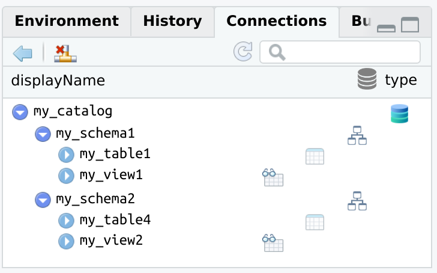

Intro
Makes it easier for other R packages or R projects to integrate with the RStudio Connections Contract. It provides several options to describe the structure of your connection. One of the options provided by rscontract is to use a YAML file that can contain the structure of the connection, and easily convert that into a proper RStudio Connections contract with a couple of lines of code:

Functions
It provides two levels of integration abstraction with the Connections pane:
-
rscontract_spec()(higher) - Enables the user to pass a hierarchical list to describe the structure of the connection (catalog/schema/table). The defaults are setup so you can open a very simple connection without changing any arguments. The idea is to allow you to easily iterate through small argument changes as you are learning how the Connection pane works. -
rscontract_ide()(lower) - The arguments of this function matches one-to-one with the expected entries needed to open a Connection pane.
The as_rscontract() function converts a variable into the same format that rscontract_ide() returns. This makes it possible for objects such as lists returned by yaml::read_yaml() to work.
There are three functions that actually interact with the RStudio IDE:
-
rscontract_open()- Opens the Connection pane. It requires a properly formatted Connections pane provided by therscontract_spec(),rscontract_ide(), oras_rscontract()functions. -
rscontract_update()- Refreshes the already opened Connections pane -
rscontract_close()- Closes the Connections pane.
Installation
You can install the development version from GitHub with:
# install.packages("remotes")
remotes::install_github("edgararuiz/rscontract")Examples
Basic example
The stock output of rscontract_spec() is loaded into a variable spec. This way it is possible to display its contents before using it to open a new connection.
library(rscontract)library(rscontract)
spec <- rscontract_spec()
str(spec)
#> List of 13
#> $ connection_object: NULL
#> $ type : chr "spec_type"
#> $ host : chr "spec_host"
#> $ icon : NULL
#> $ name : chr ""
#> $ connect_script : chr "library(connections)\n[Place your code here]"
#> $ disconnect_code : chr "function() rscontract_close('spec_host', 'spec_type')"
#> $ preview_code : chr "function(){}"
#> $ catalog_list : chr "sample_catalog()"
#> $ object_types : chr "default_types()"
#> $ object_list : NULL
#> $ object_columns : NULL
#> $ actions : NULL
#> - attr(*, "class")= chr "rscontract_spec"The connection can now be opened with spec.
rscontract_open(spec)Notice above the values of the type and host entries inside spec. Those are the two pieces of information needed by RStudio to identify the connection that needs to be updated, or closed.

rscontract comes with a basic example accessible via the sample_catalog() function. By default, rscontract_spec() uses sample_catalog() in the object_types entry to automatically give you working sample Connections pane.
rscontract_update("spec_host", "spec_type")After closing the connection, the content from the connect_script variable can be seen.
rscontract_close("spec_host", "spec_type")
Modified spec
To start creating your own connection setup, simply modify the arguments in rscontract_spec() that you wish to test. Here is an example of a few modifications that are possible to make:
spec <- rscontract_spec(
type = "my_type",
host = "my_host",
icon = system.file("images", "rstudio-icon.png", package = "rscontract"),
name = "Modified Name",
connect_script = "[This is my connection code]",
disconnect_code = "function() rscontract_close('my_host', 'my_type')",
preview_code = "function(catalog, schema, table, limit) data.frame(catalog, schema, table, limit)"
)
rscontract_open(spec)
From a file
A YAML file can be used to create the connection. The structure and name of each field has to match to what is expected by rscontract. The example below shows a basic example of the names and the expected type of input. By default, the content in the following fields will be evaluated is if it was R code:
disconnect_codepreview_code
Here is an sample file included as part of the rscontract package:
name: My Connection
type: my_connection
host: hosted_here
connect_script: my_function_connect(path = "myfile.txt")
disconnect_code: function() rscontract_close("hosted_here", "my_connection")
preview_code: function(table, view, ...) c(table, view)
catalog_list:
catalogs:
name: my_catalog
type: catalog
schemas:
- name: my_schema
type: schema
tables:
- name: my_table
type: table
fields:
- name: field1
type: nbr
- name: field2
type: chrThe key of using a YAML file, is to coerce it into a contract format using as_rscontract(). Then use rscontract_open() to start the connection.
# Obtains the path to the sample YAML file
contract_file <- system.file("specs", "simple.yml", package = "rscontract")
# Reads the YAML file using the `yaml` package
contract <- yaml::read_yaml(contract_file)
# Coerces list into a contract spec
spec <- as_rscontract(contract)
# Opens the connection
rscontract_open(spec)
R code as a value
In order to pass R code instead of the value, then use a sub-entry called code for the entry you wish to modify.
name:
code: toupper("my_title")
type:
code: tolower("TYPE")
host: host
connect_script: Place connection code here
disconnect_code: function() rscontract_close("host", "type")
preview_code: function(table, view, ...) c(table, view)
catalog_list:
catalogs:
name: my_catalog
type: catalog
schemas:
- name: my_schema1
type: schema
tables:
- name: my_view1
type: view
fields:
code: list(list(name = "ext_function", type = "int"))contract_file <- system.file("specs", "full.yml", package = "rscontract")
contract <- yaml::read_yaml(contract_file)
spec <- as_rscontract(contract)
rscontract_open(spec)
Multiple schemas
Here is an example of a Contract with multiple Schemata:
name: displayName
type: type
host: host
connect_script: Place connection code here
disconnect_code: function() rscontract_close("host", "type")
preview_code: function(table, view, ...) c(table, view)
catalog_list:
catalogs:
name: my_catalog
type: catalog
schemas:
- name: my_schema1
type: schema
tables:
- name: my_table1
type: table
fields:
- name: field1
type: nbr
- name: field2
type: chr
- name: my_view1
type: view
fields:
- name: field3
type: nbr
- name: field4
type: chr
- name: my_schema2
type: schema
tables:
- name: my_table4
type: table
fields:
- name: field5
type: nbr
- name: field6
type: chr
- name: my_view2
type: view
fields:
- name: field7
type: nbr
- name: field8
type: chrcontract_file <- system.file("specs", "two-schemas.yml", package = "rscontract")
contract <- yaml::read_yaml(contract_file)
spec <- as_rscontract(contract)
rscontract_open(spec)